{kind=link}
{kind=link}
{kind=link}
{kind=link}
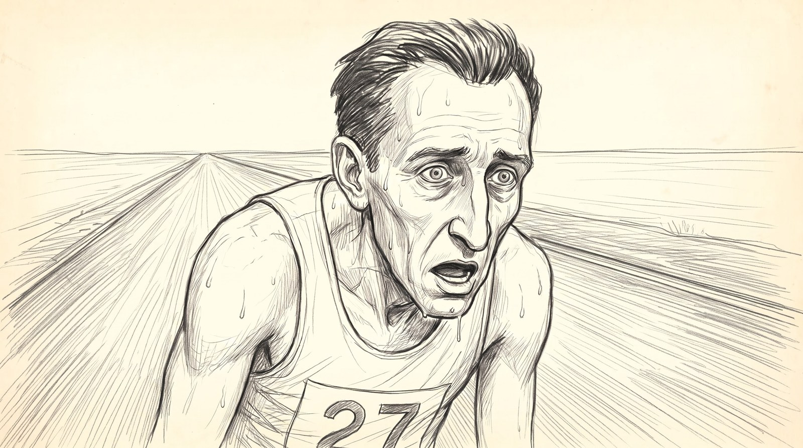
Scene 1 The mystery
WE ARE WORKING ON SCENE 1. Everything happens on this page. Nothing is written on any other scene page.
scene -> shot -> key frame
Storyboard
The whole scene in order, 17 frames across 8 shots, read left to right like a silent film. This is the scene. Everything below it is the breakdown: the sheets, the frame and the shots opened one at a time. Click any frame to open the shot it belongs to.
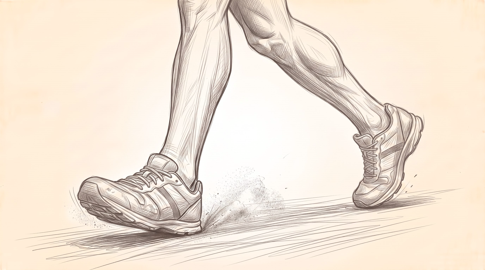
1.01-0-B-v1
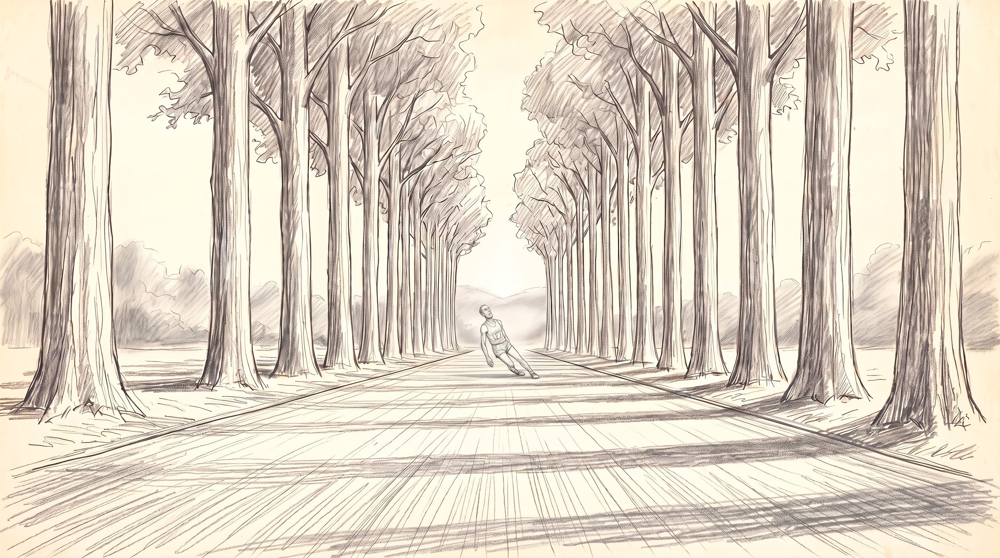
1.01-0-A-v2
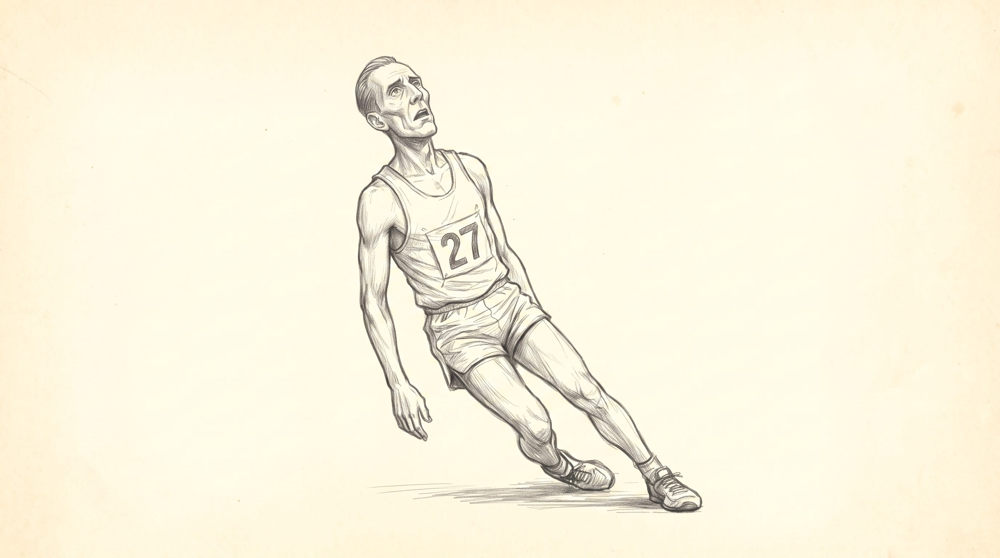
1.01-0-C-v2
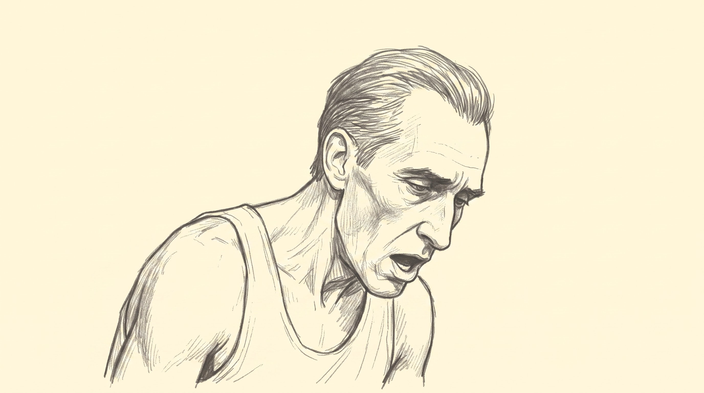
1.11-1-v11
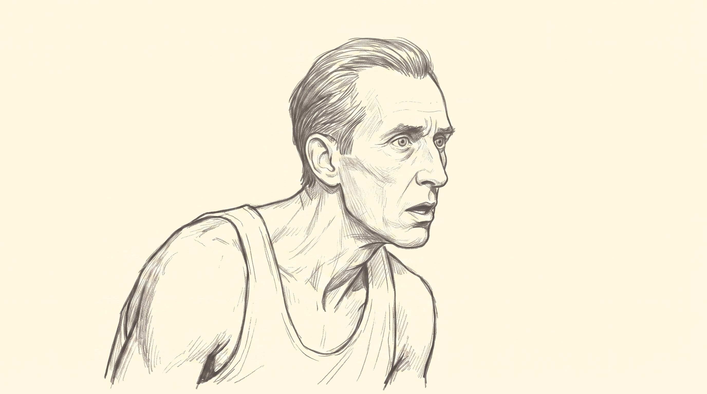
1.11-1-v15
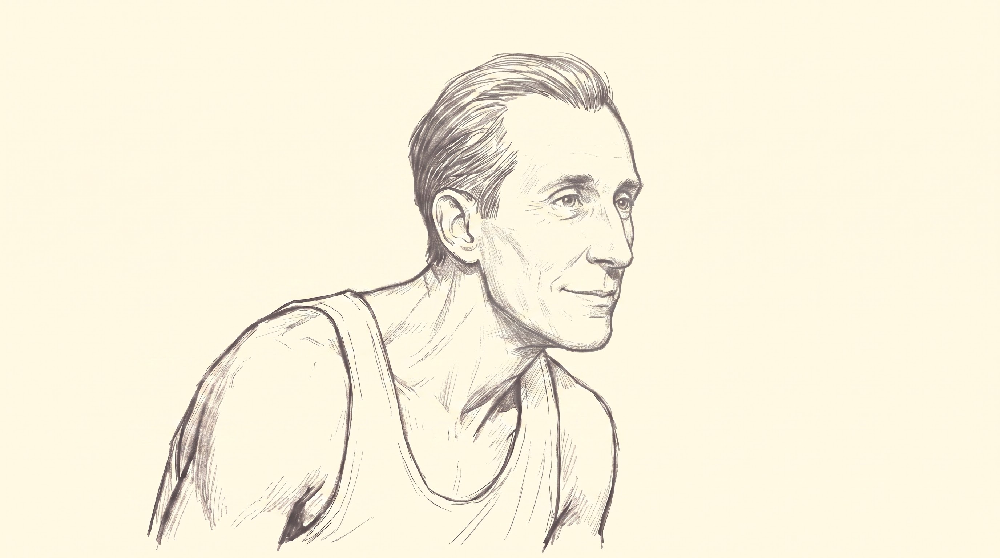
1.11-1-v18
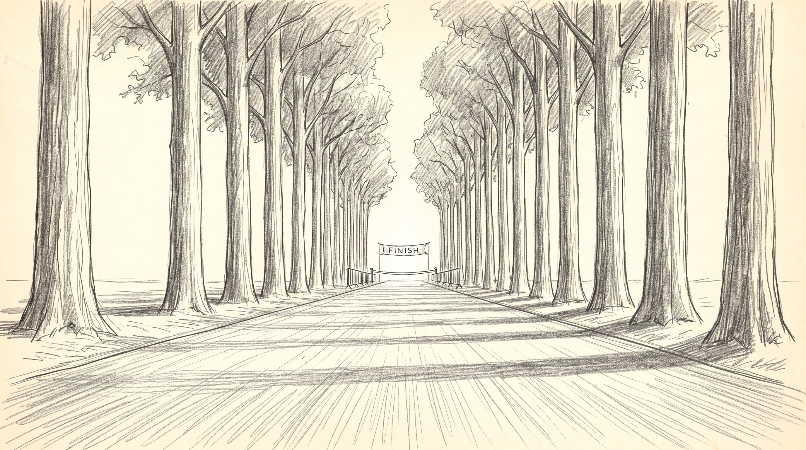
1.2b1-2b-v1
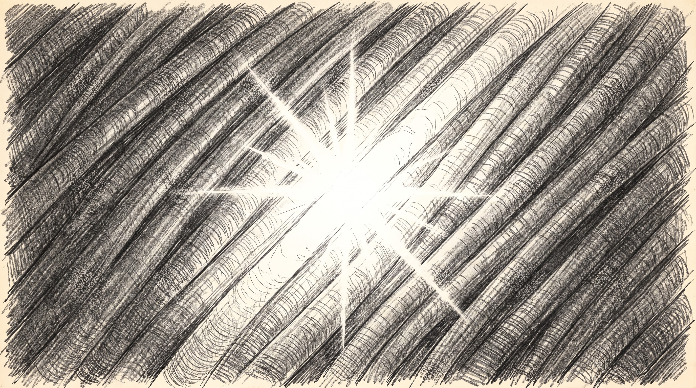
1.2c1-2c-1-v1
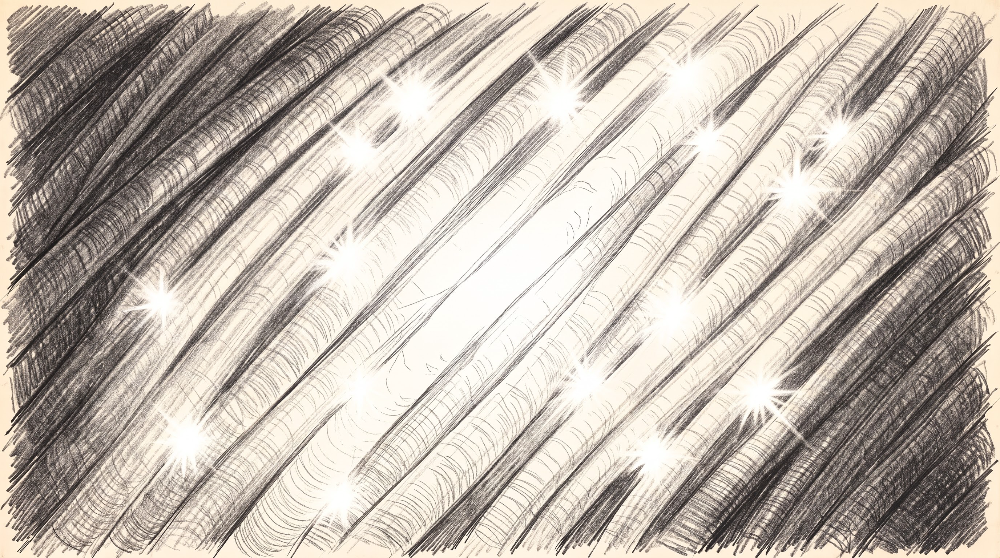
1.2c1-2c-2-v1
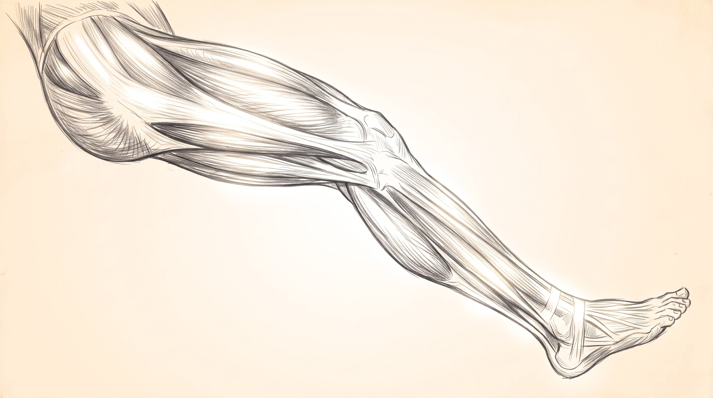
1.2c1-2c-3-v1
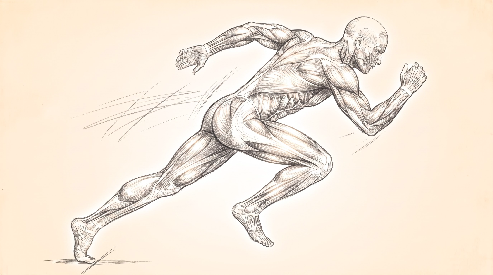
1.2c1-2c-4-v1
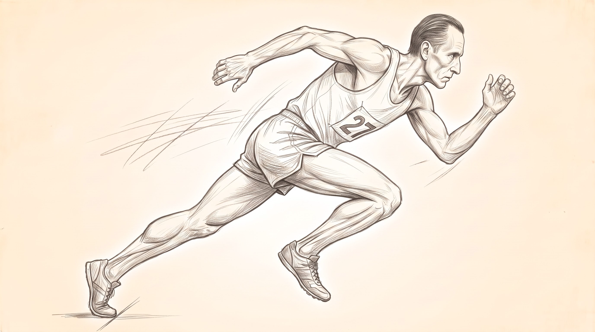
1.31-3-A-v1
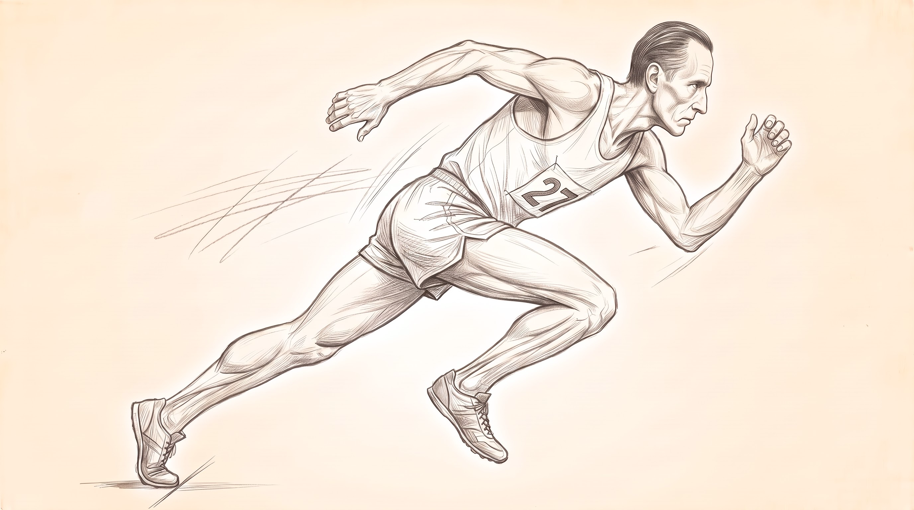
1.31-3-B-v5

1.51-5-v1
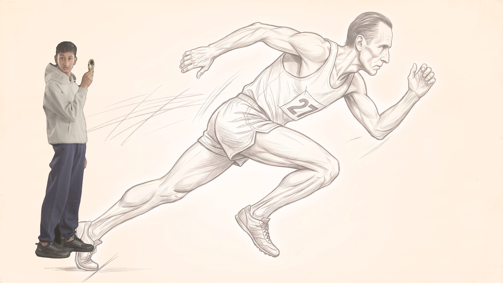
1.51-4-C-v2
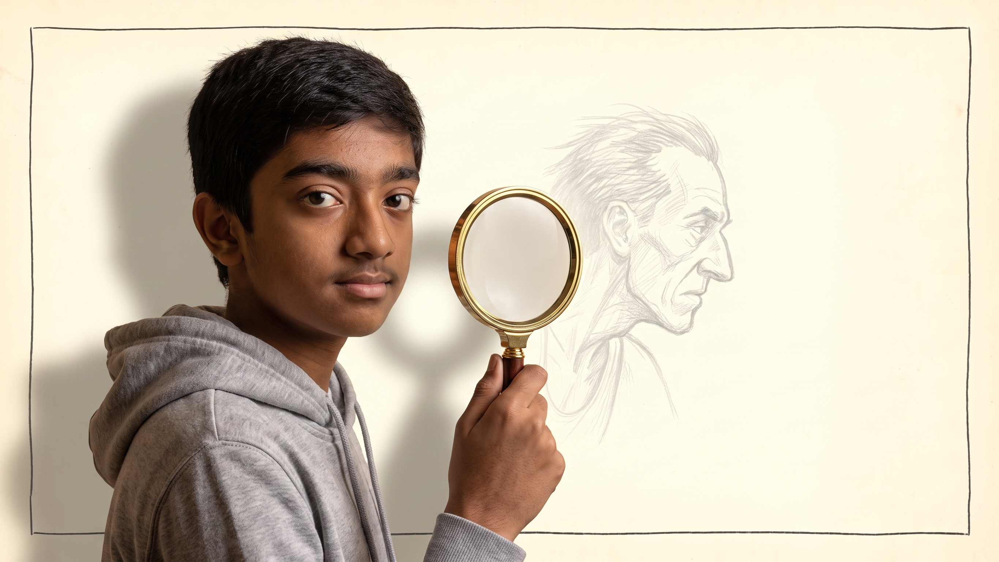
1.61-6-v1
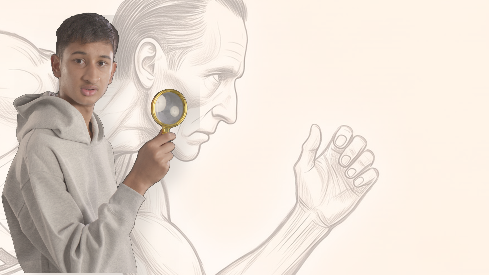
1.61-4-D-v3
Breakdowns are made on request. A frame is delivered flat unless you ask for it to be split into background and foreground, because most frames do not need it and splitting one takes real time. Tick the ones you want and press the button at the bottom. Marko gets an email and does them.
Character sheets
The frame
How a layer arrives
Anything that moves on its own comes to you as three files, never as one picture. This is the pattern, shown with the frame because the frame is already done. The sweat droplets on shot 1.1 arrive the same way: a plate with dry skin, the droplets alone on transparency, and a composite so there is never a question about where they sit. If you need a different split than the one you are given, tick need a breakdown on the key frame and say what you want separated.
{kind=link}
{kind=link}
Shots
8 shots. One picture stands for each shot. Click it to open the shot and see every key frame in it, and to ask for a breakdown or a change.